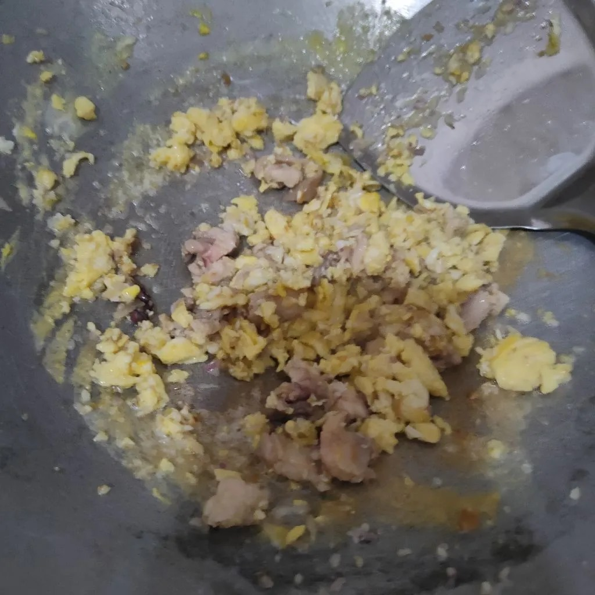
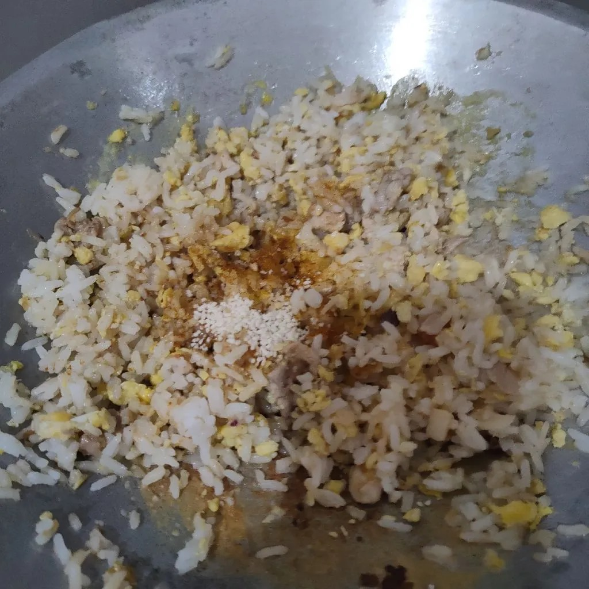
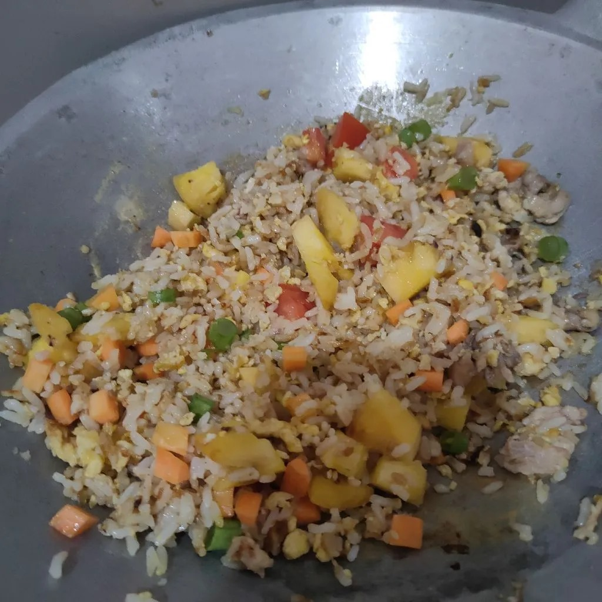

Nasi Goreng
Diupload pada: 15 - Desember - 2024
Author
20 menit
5 bahan
Bahan - bahan
- Nasi
- Margarin
- Telur
- Ikan teri
- Bumbu-bumbu
Alat dan perlengkapan
- Teflon
- Spatula
- Minyak secukupnya
Langkah-Langkah

Langkah 1
Masukan margarin telur dan kondimen lain lalu masak sebentar hingga telurnya setengah matang.

Langkah 2
Masukan nasi lalu masak sebentar dan aduk hingga merata.

Langkah 3
Campurkan bumbu-bumbu dan tambahkan topping opsional seperti sosis, sayur, dan yang lainnya.